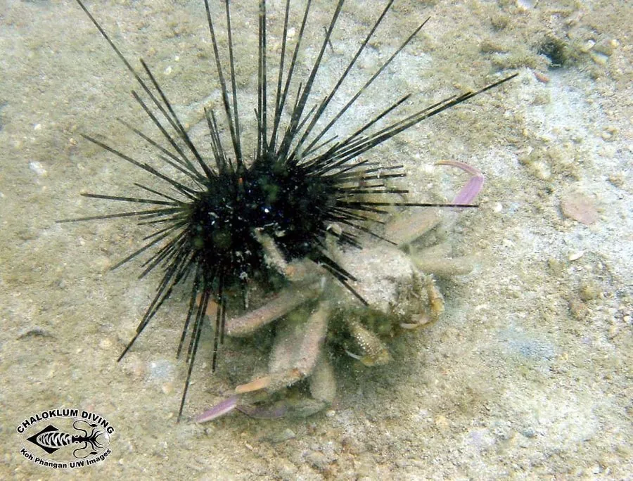

甲壳动物 · 动物界
关公蟹 Dorippe facchino

头胸甲上有类似关公脸谱的斑纹，常背着贝壳或海葵伪装自己，生活在浅海沙泥底，是外形奇特的小型蟹类。
- 分类
- 门节肢动物门纲软甲纲目十足目科关公蟹科属关公蟹属
- 栖息环境
- 浅海沙泥底，常把贝壳、海葵或碎屑背在背上
- 地理分布
- 中国东南沿海、日本和东南亚海域
- 保护级别
- IUCN 暂无评估；中国未列入国家重点保护名录
物种志
关公蟹头胸甲宽 2–3 cm，近圆形，体色浅黄或灰褐，背面有深色斑纹，形似戏曲中的关公脸谱，因此得名；它的后两对步足退化变小，位于身体背面，适合背负物体。
它分布于中国东南沿海、日本和东南亚的浅海沙泥底，栖息于潮下带至水深数十米处，昼伏夜出，取食有机碎屑、藻类和小型底栖动物。关公蟹常用退化的后足把贝壳、海葵或碎屑背在背上，作为伪装和防御，这种习性让它看起来像一块移动的杂物。它体型小，行动缓慢，是沿海底栖群落中的常见成员；受惊时它会缩起身体，把背上的物体盖得更紧，甲壳花纹还会因个体而异。目前 IUCN 暂无评估；中国未列入国家重点保护名录。
形态与习性
- 食性有机碎屑、藻类和小型底栖动物
- 体型头胸甲宽 2–3 cm
- 识别头胸甲斑纹形似关公脸谱
- 习性用退化的后足背负贝壳或海葵伪装
- 防御受惊时缩起身体，用背上物体遮挡
- 活动昼伏夜出，行动缓慢
趣味知识
- 关公蟹的甲壳斑纹像一张关公脸谱，名字由此而来。
- 它会把贝壳或海葵背在背上，把自己伪装成一堆杂物。
- 关公蟹的后两对步足已经退化，专门用来背东西。